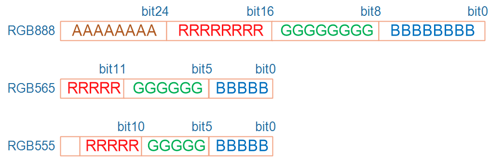
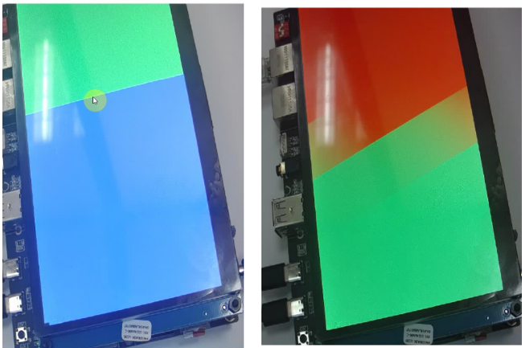
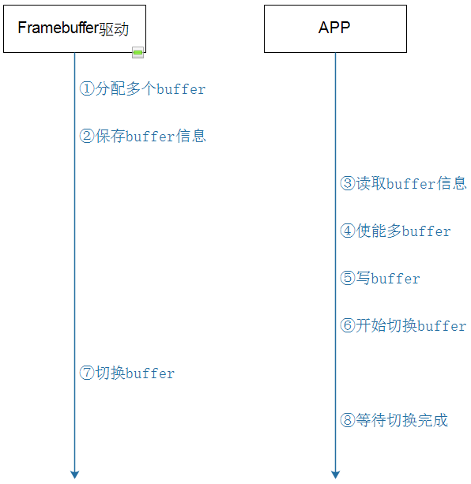

Framebuffer
像素颜色
用红绿蓝三颜色来表示，可以用24位数据来表示红绿蓝，也可以用16位等等格式，比如：
- bpp：bits per pixel，每个像素用多少位来表示
- 24bpp：实际上会用到32位，其中8位未使用，其余24位中分别用8位表示红(R)、绿(G)、蓝(B) 。24位使用32位来存储方便寻址。
- 16bpp：有rbg565，rgb555
- rgb565：用5位表示红、6位表示绿、5位表示蓝。人眼对绿色较敏感，能分辨出其中的细微差别
- rgb555：16位数据中用5位表示红、5位表示绿、5位表示蓝，浪费一位

注：有些LCD控制器可以设置红绿蓝三原色的位置，比如24位的数据里，可能是RGB888，也可能是BGR888
Framebuffer
存储像素数据的一块特殊内存，显存
- 也有芯片手册称为 GRAM, G指图形
对于应用工程师
使用LCD只需要掌握三点：
- 颜色格式：16bpp/24bpp
- Framebuffer基地址
- LCD屏幕分辨率，根据分辨率才能找到像素点在显存的任意位置
应用工程师将数据写入Framebuffer即可，LCD controler （LCD控制器）会帮助更新屏幕上像素的颜色。
对于驱动工程师
对LCD的理解要深入硬件，比如要回答这几个问题：
- Framebuffer在哪里？
LCD里面还是LCD外面
- 谁把Framebuffer中的数据发给LCD？
LCD controler，驱动工程师很大一部分工作既是设置初始化LCD controler
统一的硬件模型
LCD接口众多，但硬件模型一致，原理一致

MCU常用的8080接口LCD模组
内存，LCD控制器，LCD屏幕组合成一个LCM模组，单片机F103直接跟模组通信
F103一般通过以下信号线跟LCM模组通信
- CS 片选线
- RD / WD 读写控制线
- DataBus 数据总线
- Data / cmd 控制引脚，决定DataBus上传输的是数据还是地址等其他信息
MPU常用的TFT RGB接口
只有LCD屏幕在外面，LCD控制器位于ARM芯片内部，可外接显存。LCD控制器通过RGB三组线以及其他控制信号线对LCD屏幕进行控制
- DCLK 移动一个像素点
- HSYNC 从最右跳到下一行
- VSYNC 从最后一个跳到第一个
- DE 决定是否接受RGB数据，在像素点跳转时禁用RGB数据
RGB三组线
对于使用真彩色的LCD控制器，RGB引脚上的数据直接来自自Framebuffer；
对于使用调色板的LCD控制器，Framebuffer中的数据只是用来取出调色板中的颜色，调色板中的数据会被放到RGB引脚上去。
编写Framebuffer框架
分配显存时，不可以使用kmalloc函数。
显存要保证物理地址连续，kamlloc函数分配的内存可以保证虚拟地址的联系，但在物理地址上不一定是连续的。
Framebuffer框架分为上下两层：
- fbmem.c：承上启下
- 实现、注册file_operations结构体
- 把APP的调用向下转发到具体的硬件驱动程序
- xxx_fb.c：硬件相关的驱动程序
- 实现、注册fb_info结构体
- 实现硬件操作
Framebuffer核心：
分配fb_info
- framebuffer_alloc
设置fb_info
- var
- fbops
- 硬件相关操作
注册fb_info
- register_framebuffer
imx6ull LCD 控制器
控制器模块
- 硬件框架
- 数据传输与处理
- 时序控制
数据处理过程
- 从显存读数据 32bit * n
- 判断是否交换
- 使用哪种RGB格式 RGB555， RGB565, RGB888
- 设置时序，用于发送数据
- RGB 数据格式 跟LCD屏幕匹配
例如：RGB 888 - > 16bpp的LCD ，在8位中只传五位
LCD控制器寄存器简介
查看任何芯片的LCD控制器寄存器时，记住几个要点：
① 怎么把LCD的信息告诉LCD控制器：即分辨率、行列时序、像素时钟等；
② 怎么把显存地址、像素格式告诉LCD控制器。
内核中的LCD驱动程序
如何确定内存LCD驱动程序
在已经编译好的内核中 drivers/video/fbdev目录下，有哪些.o文件，对应的.c文件。
编程_LCD驱动程序框架_使用设备树
Linux驱动程序 = 驱动程序框架 + 硬件编程。
驱动程序框架核心就是：
- 分配fb_info
- 设置fb_info
- 注册fb_info
- 硬件相关的设置
硬件相关的设置
- 引脚设置
- 时钟设置
- LCD控制器设置
入口函数注册platform_driver
设备树结点：
1 | framebuffer-mylcd { |
编写probe函数
- 驱动程序框架核心 fb_info
- 硬件相关的设置
引脚配置
主要使用pinctrl子系统把引脚配置为LCD功能，对于背光引脚等使用GPIO子系统的函数控制它的输出电平。
设备树结点
1 | pinctrl-names = "default"; |
时钟配置
通过芯片手册，查看需要使能那些时钟
设备树结点
1 | clocks = <&clks IMX6UL_CLK_LCDIF_PIX>, |
配置LCD控制器
在设备树里指定LCD参数
1 | framebuffer-mylcd { |
从设备树获得参数
1 | int ret; |
使用参数配置LCD控制器
根据芯片手册，一个一个设置寄存器：
- Framebuffer地址设置
- Framebuffer中数据格式设置
- LCD时序参数设置
- LCD引脚极性设置
注意：硬件参数，例如lcd控制器物理地址等，最好在设备树中指定，而不是写在代码中
调试LCD驱动程序
要做的事情
去除内核自带的驱动程序
加入我们编写的驱动程序、设备树文件
重新编译内核、设备树
上机测试：使用编译出来的内核、设备树启动板子
单Buffer的缺点与改进方法
单buffer的缺点
如果APP速度很慢，可以看到它在LCD上缓慢绘制图案
即使APP速度很高，LCD控制器不断从Framebuffer中读取数据来显示，而APP不断把数据写入Framebuffer
假设APP想把LCD显示为整屏幕的蓝色、红色
很大几率出现这种情况：
LCD控制器读取Framebuffer数据，读到一半时，在LCD上显示了半屏幕的蓝色
这是APP非常高效地把整个Framebuffer的数据都改为了红色
LCD控制器继续读取数据，于是LCD上就会显示半屏幕蓝色、半屏幕红色
人眼就会感觉到屏幕闪烁、撕裂

使用多Buffer来改进
上述两个缺点的根源是一致的：Framebuffer中的数据还没准备好整帧数据，就被LCD控制器使用了。
- 使用双buffer甚至多buffer可以解决这个问题。
1 | * 假设有2个Framebuffer：FB0、FB1 |
具体流程：

- 驱动：分配多个buffer
1 | fb_info->fix.smem_len = SZ_32M; |
- 驱动：保存buffer信息
1 | fb_info->fix.smem_len // 含有总buffer大小 |
fb_info固定信息 fix：显存起始地址，大小
可变信息 var：x / y 分辨率
1 | /*一般情况下*/ /*分配了多个buffer，在y轴上叠加*/ |
- APP : 读取buffer信息
1 | ioctl(fd_fb, FBIOGET_FSCREENINFO, &fix); |
- APP：使能多buffer
1 | var.yres_virtual = nBuffers * var.yres; |
- APP : 写buffer
1 | fb_base = (unsigned char *)mmap(NULL , fix.smem_len, PROT_READ | PROT_WRITE, MAP_SHARED, fd_fb, 0); |
- APP : 切换buffer
1 | /* switch buffer */ |
- 驱动：切换buffer
1 | // fbmem.c |